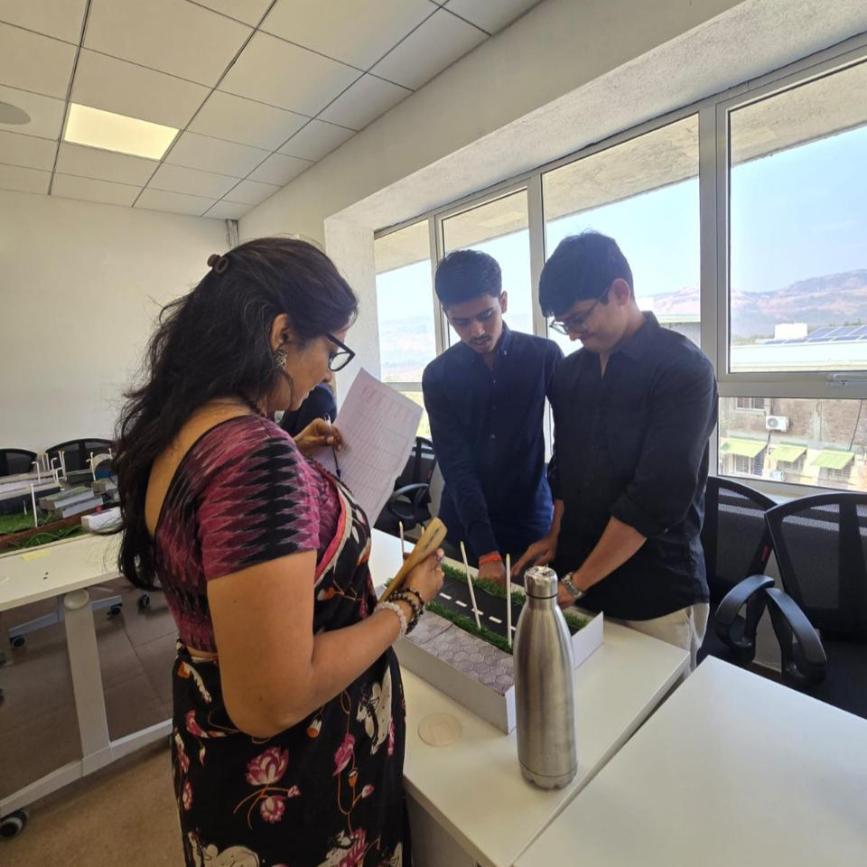

ARDUINO-BASED SMART CITY MODEL INSPIRED BY JAPANESE PIEZOELECTRIC WALKWAYS

This project demonstrates a smart street lighting system where pedestrian interaction activates road lights. Inspired by piezoelectric energy-generating sidewalks used in Japan, the model simulates pressure detection using push buttons connected to an Arduino UNO. When a pedestrian presses either sidewalk button, street lights automatically turn on for a fixed duration to improve safety and energy efficiency.
Control Flow Architecture
Pedestrian Button Press
Arduino Input Detection
Signal Processing (INPUT_PULLUP logic)
LED Control Loop
Street Lights Activated (3 Seconds)
Hardware Components
Arduino UNO
Custom PCB Push Buttons (2 units)
LEDs (6 street lights)
Current-limiting resistors (220Ω)
Breadboard & Jumper wires
USB Power Supply
Circuit Design
Each LED is connected to a separate Arduino digital output pin.
Each LED circuit utilizes a 220Ω resistor for current protection.
Both physical buttons are wired in parallel to a single digital input pin.
Utilized the Arduino's internal pull-up resistor (INPUT_PULLUP) to ensure a stable logic state, preventing floating pin interference.
System Working Principle
1. Trigger:
Pedestrian presses sidewalk tile (simulated via push button).
2. Detection:
Arduino detects a LOW signal dropping against the internal pull-up resistor.
3. Activation:
Arduino outputs HIGH to all LED street light pins simultaneously.
4. Duration:
Lights remain illuminated for a fixed safety duration of 3 seconds.
5. Reset:
System automatically shuts off lighting, conserving power until the next trigger.
Firmware Implementation
The logic relies on INPUT_PULLUP, meaning the unpressed state reads as HIGH. When a button is pressed, the circuit connects to ground, dropping the pin to a LOW state to trigger the lighting loop.
smart_lighting.ino
#defineBUTTON_PIN 2// Array to manage 6 street light LEDsint streetLights[] = {3, 4, 5, 6, 7, 8};
int numLights = 6;
voidsetup() {
// Internal pull-up ensures stable HIGH state when unpressedpinMode(BUTTON_PIN, INPUT_PULLUP);
for (int i = 0; i < numLights; i++) {
pinMode(streetLights[i], OUTPUT);
digitalWrite(streetLights[i], LOW); // Ensure off at startup
}
}
voidloop() {
// LOW signal indicates button press (connected to GND)if (digitalRead(BUTTON_PIN) == LOW) {
// Activate all street lightsfor (int i = 0; i < numLights; i++) {
digitalWrite(streetLights[i], HIGH);
}
delay(3000); // Maintain illumination for 3 seconds// Deactivate lightsfor (int i = 0; i < numLights; i++) {
digitalWrite(streetLights[i], LOW);
}
}
}
Key Features
Energy efficient lighting
Pedestrian safety focused
Real-world smart city inspiration
Low-cost hardware implementation
Highly expandable system
Future Scalability
Integration of real piezoelectric sensors
Solar-powered independent lighting nodes
Automatic night detection (via LDR)
Wireless monitoring dashboard
Conclusion
This project demonstrates how simple embedded systems can simulate smart city infrastructure. By combining pedestrian input with automated lighting control, the design highlights energy efficiency and urban safety concepts, proving that scalable logic can be prototyped using highly accessible microcontrollers.